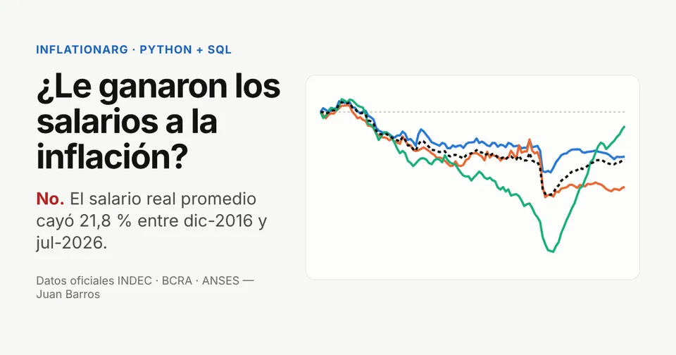

Proyecto principal · Python + SQL
¿Le ganaron los salarios a la inflación? Argentina 2016–2026
No. Con datos oficiales a julio de 2026, el salario real promedio quedó 21,8 % por debajo de diciembre de 2016, y el del sector público, 34,3 %.
- Pipeline en Python que corre de punta a punta con un comando: descarga verificada, base SQLite, Excel y sitio web.
- SQL de verdad: modelo estrella, vistas con CTEs y window functions (
LAG,RANK) y una consulta comentada por pregunta de negocio. - QA de datos: 11 chequeos automáticos que encontraron anomalías reales en las fuentes oficiales, como series vacías en la API y un valor repetido del RIPTE.
- Para RR.HH.: una calculadora que dice cuánto hay que ajustar un sueldo para no perder contra la inflación.
Python · pandas · SQLite · SQL · ECharts · Excel · modelo para Power BI · pytest · GitHub Actions
